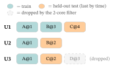
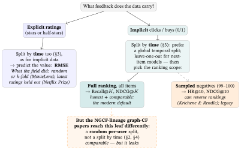

Appendix B — Datasets & Benchmarks
1. The datasets you will actually meet
Academic recommendation runs on a surprisingly small set of public logs. It helps to group them by family, because the family fixes the loss and the metric more than the size does:
- Rating prediction (explicit stars) — MovieLens, Netflix, Book-Crossing.
- Implicit top-\(N\) / graph CF (clicks, check-ins, buys) — Gowalla, Yelp, Amazon, Steam, LastFM.
- CTR / news / sequential (a binary click, often with rich features or a time axis) — Criteo, MIND, Taobao.
For each, the four properties that actually change your modelling choice are: feedback (explicit ratings vs. implicit 0/1), timestamps? (needed for a temporal split, §3), side-features? (enables content / FM / cold-start), and license.
| Dataset | Domain | Scale (approx.) | Feedback | Time | Side-features | Status & license |
|---|---|---|---|---|---|---|
| MovieLens (100K–32M) | movies | 100K–32M ratings | explicit 1–5 | yes | genres, tags, tag-genome; demographics (100K/1M only) | Active — GroupLens; research, non-commercial |
| Netflix Prize | movies | 100M ratings | explicit 1–5 | yes | title/year only | Withdrawn (de-anonymization); copies circulate — cite as history (§7) |
| Amazon Reviews | e-commerce | 233M (’18) → 571M (’23) | explicit 1–5 + text | yes | metadata, images; per category | Active — research; on HuggingFace |
| Yelp Open Dataset | local business | ~7M reviews | explicit 1–5 + text | yes | attributes, social graph, check-ins | Active (rolling) — academic, revocable |
| Gowalla | check-ins | ~1M (10-core) | implicit | yes | geo, friendship graph | Active — SNAP, public |
| Steam | games | ~7M reviews | implicit + reviews | yes | genres, price, playtime | Active — research |
| LastFM (LFM-1b / 2b) | music | 1B–2B plays | implicit | yes | demographics, genre | Withdrawn — LFM-2b pulled (license); LFM-1b gated |
| MIND | news | 1M users, >15M impr. | implicit click | yes | title, abstract, body, entities | Active — Microsoft research license |
| Criteo | display ads | ~45M rows | implicit click | — | 13 numeric + 26 categorical (hashed) | Active — public (Kaggle) |
| Book-Crossing | books | 1.1M ratings | explicit 1–10 + implicit | no | age, location, metadata | Active — public (GroupLens) |
Inside the families: which variant carries what. Several entries above are not one dataset but a family of releases, and a beginner can lose hours to the wrong one (MovieLens alone has seven). The matrices below show, per family, what data each variant actually gives you.
| MovieLens variant | Ratings | Scale | Tags | Tag-genome | Demographics | Best for |
|---|---|---|---|---|---|---|
| 100K (1998) | 100K | 1–5 | — | — | yes | smallest frozen set; demographics |
| 1M (2003) | 1M | 1–5 | — | — | yes | the classic mid-scale CF benchmark |
| 10M (2009) | 10M | 0.5–5 | yes | — | — | first release with free-text tags |
| 20M (2015) | 20M | 0.5–5 | yes | yes | — | the classic tag-genome benchmark |
| 25M (2019) | 25M | 0.5–5 | yes | yes | — | larger frozen genome set |
| latest-small | ~100K | 0.5–5 | yes | — | — | quick dev / teaching — not for results |
| latest-full | ~33M | 0.5–5 | yes | yes | — | dev only; changes over time |
| Amazon Reviews version | Curators | Reviews | Categories | Adds over prior | Status |
|---|---|---|---|---|---|
| 2014 | McAuley et al. | ~143M | ~24 | ratings, text, also-bought graph | superseded |
| 2018 | Ni, Li & McAuley | 233M | ~30 | \(+\) price, brand, image features | Active |
| 2023 | Hou et al. (McAuley Lab) | 571M | 33 | \(+\) richer metadata; HuggingFace-hosted | Active — current |
| Other family · variant | Scale | Carries | Status |
|---|---|---|---|
| Yelp Open Dataset (rolling) | ~7M reviews · 150K businesses · ~1.9M users | text + stars, business attributes, friend graph, check-ins, tips | Active — academic, revocable |
| Yelp2018 (snapshot) | 31.7K users · 38K items · 1.56M (10-core) | interactions only | Frozen — in NGCF/LightGCN repos |
| MIND-large (news) | 1M users · ~160K news · >15M impressions | title, abstract, body, category, entities | Active — MS research license |
| MIND-small | 50K sampled users (train+dev) | a subset of MIND-large | Active |
| Book-Crossing | 1.15M ratings · 279K users · 271K books | explicit 1–10 + implicit (0); age/location | Active — GroupLens |
| Goodreads (UCSD) | ~228M interactions · 876K users · 2.36M books | reviews, shelves, spoiler tags | Active — academic |
| Amazon-Books | = Amazon Reviews “Books” category | (see the Amazon table) | Active |
2. The standard graph-CF trio: Gowalla, Yelp2018, Amazon-Book
The graph chapters (From Graphs to LightGCN, SSL & Contrastive Learning) — and nearly every graph-CF paper — report on the same three datasets: Gowalla, Yelp2018, and Amazon-Book. This is not a coincidence, and knowing why saves a beginner real confusion:
- They are implicit / one-class. Graph CF models the user–item interaction graph; explicit star ratings are discarded and every observed pair is a binary edge. All three are pure interaction logs, not rating-prediction tasks.
- They span a sparsity range (~\(0.08\%\)–\(0.13\%\) density) and three domains (check-ins, local-business, books), so a method cannot win by overfitting one density regime.
- The preprocessing is frozen. Everyone reuses the same 10-core-filtered, fixed train/test split released with NGCF (the paper LightGCN built on). That shared split — not any statistical superiority — is the real reason the trio dominates: it lets papers quote each other’s numbers as directly comparable.
Why this matters (and its catch). Comparability is the whole point — but the frozen split is itself a known hazard (§3): if it was made by a random rather than a temporal cut, every model trained on it inherits the same future-leak. Comparable is not the same as correct.
3. Splitting without leaking the future (the keystone)
A model is graded by holding out some interactions as a test set. How you choose them decides whether the score is honest. Two protocols dominate, and the difference is the single most important idea in this appendix.
- Random split — hold out a random fraction of all interactions. Simple, and wrong for any data with time: it can put a user’s later interactions in train and an earlier one in test, so the model trains on the future to predict the past. The score inflates.
- Temporal / leave-one-last split — for each user, sort by time and hold out their chronologically last interaction (and often the second-last for validation). This grades the model the way it is used: predict the next thing from everything before it. It is the honest default, and mandatory for sequential models (Sequential & Session-Based Recommendation §6).
Almost always, a k-core filter runs first: repeatedly drop users and items with fewer than \(k\) interactions until none remain (papers use \(k=10\); we use \(k=2\) to keep it tiny). This removes the noisiest cold cases so the comparison is stable.
Worked example — k-core then leave-one-last, by hand. Four users over five items, with timestamps \(t\):
| User | Interactions (item@time) |
|---|---|
| U1 | A@1, B@2, C@3 |
| U2 | A@1, B@2 |
| U3 | A@1, C@2, D@3 |
| U4 | E@1 |
Step 1 — 2-core filter. Count interactions: users U1=3, U2=2, U3=3, U4=1; items A=3, B=2, C=2, D=1, E=1. Drop everything below \(2\): out goes U4 (only one interaction) and items D and E. Re-check what remains — U1=3, U2=2, U3=2; A=3, B=2, C=2 — all \(\ge 2\), so we stop (the filter is iterative; here one pass suffices).
Step 2 — leave-one-last. For each surviving user, hold out the last by time:
\[ \text{TEST}=\{\text{U1}\!:\!\text{C@3},\ \text{U2}\!:\!\text{B@2},\ \text{U3}\!:\!\text{C@2}\},\qquad \text{TRAIN}=\{\text{U1}\!:\!\text{A,B},\ \text{U2}\!:\!\text{A},\ \text{U3}\!:\!\text{A}\}. \]
Note the subtlety that trips people up: U3’s chronologically last interaction was D@3 — but D was removed by the k-core filter, so U3’s held-out test item is the next-latest survivor, C@2. Filtering happens before splitting; the order matters.

D@3, was filtered out before the split, so its test item is the next-latest survivor, C@2 — filtering precedes splitting.
Why not just split randomly? Because recommendation is a forecast. A random split that trains on U1’s C@3 and tests on U1’s A@1 is grading the model on a question it has already been shown the answer to. Every honest evaluation in this book uses a temporal hold-out.
4. The benchmark map: which model, which dataset, which protocol
The sections so far gave you the datasets (§1), the trio everyone shares (§2), and how to split without leaking the future (§3). This section assembles them into the map the rest of the literature actually lives on: for each research community, the datasets it runs on, the models most often cited on them, and the one evaluation protocol they all share. Read alongside the LLM × RecSys: the Landscape chapter — which surveys the models in depth — it is, in one place, the answer to the question a practitioner or reviewer asks first: which model, on which dataset, under which protocol?
One idea organizes the whole map, and it is the opposite of what a beginner expects: the protocol is fixed by the research community, not by the dataset. MovieLens-1M alone is evaluated three incompatible ways — as RMSE rating-prediction (the Netflix-Prize lineage), as leave-one-out ranking against 99 sampled negatives (the NCF lineage), and as leave-one-out next-item prediction against 100 sampled negatives (the SASRec / BERT4Rec lineage). A number is therefore comparable to another only when the regime, the split, and the ranking scope all match — the concrete form of the reproducibility warning §5 sharpens. (The metric definitions — Recall@\(K\), NDCG@\(K\), MRR, AUC, RMSE — and the sampled-vs-full argument live in Evaluation Metrics; here they are only labels.)
| Regime (community) | Typical datasets | Most-cited models (year) | Split | Ranking scope | Headline metrics |
|---|---|---|---|---|---|
| Rating prediction | Netflix Prize; MovieLens 100K/1M/10M | MF / SVD++ (’08), timeSVD++ (’09), RBM-CF (’07), BellKor (’09) | random or \(k\)-fold over ratings | predict the star value | RMSE (MAE) |
| Implicit top-\(N\), sampled | MovieLens-1M; Pinterest | NeuMF / NCF (’17) | leave-one-out (last by time) | vs. 99 sampled negatives | HR@10, NDCG@10 |
| Sequential, sampled | MovieLens-1M; Amazon Beauty/Games; Steam (BERT4Rec adds ML-20M) | GRU4Rec (’16), Caser (’18), SASRec (’18), BERT4Rec (’19) | leave-one-out | vs. 100 sampled negatives | HR@10, NDCG@10, MRR |
| Sequential, full | + Amazon Sports/Toys; Yelp | S3-Rec (’20), CL4SRec (’22), DuoRec (’22), FEARec (’23) | leave-one-out | full ranking (all items) | HR / NDCG @10,20, MRR |
| Graph CF (the trio) | Gowalla, Yelp2018, Amazon-Book (SGL adds iFashion; KGAT adds LastFM) | NGCF (’19), LightGCN (’20), DGCF (’20), SGL (’21), SimGCL (’22), LightGCL (’23) | random per-user 80/20, 10-core | full ranking (all items) | Recall@20, NDCG@20 |
| CTR prediction | Criteo, Avazu | Wide&Deep (’16), DeepFM (’17), DCN (’17), xDeepFM (’18), AutoInt (’19), DIN (’18) | random 8:1:1 | per-impression binary click | AUC, LogLoss |
| News | MIND | DKN (’18), NPA (’19), NAML (’19), LSTUR (’19), NRMS (’19) | impression / time-ordered | within each impression | AUC, MRR, nDCG@5/10 |
| LLM-augmented CF (this book) | ML-20M (genome subset); Amazon-Books; ML-1M | RLMRec R1/R1-plus/R2/R3, LightGCN + contrastive backbones, SASRec | global temporal (by date), 10-core | full ranking (all items) | NDCG / Recall @10,20,50, MRR; 5-seed paired-\(t\) |
A few precise points the table compresses, each worth knowing before you trust a leaderboard:
- The sequential shift (the two sequential rows). Early next-item models ranked the held-out item against a small sample of 100 negatives (BERT4Rec’s drawn by item popularity; SASRec’s paper says only “randomly sampled”) and reported HR@10 / NDCG@10. After Krichene & Rendle (2020) showed sampled metrics can reverse which model looks better (§5), the field moved to full ranking over the whole catalogue; S3-Rec, CL4SRec, DuoRec and later work report unsampled metrics, and modern re-benchmarks re-score even SASRec and BERT4Rec that way. One model, two very different headline numbers — always check which.
- NCF vs. sequential negatives. The NCF protocol pairs the test item with 99 sampled negatives (a 100-item list); the SASRec / BERT4Rec protocol uses 100 (a 101-item list). The one-item difference is real, and it is exactly the kind of detail that makes two “leave-one-out HR@10” numbers quietly non-comparable.
- The trio’s split is random, not temporal (§2, §3). NGCF released a fixed per-user 80/20 split (10% of train held out for validation, 10-core filtered); LightGCN and every contrastive successor reuse it verbatim — which is precisely why their numbers are mutually quotable. But because the cut is random, it does not test temporal generalization: here “comparable” still is not “leak-free.”
- Dataset lineage, kept straight. Alibaba-iFashion enters this list with SGL (2021), not the original trio; LastFM / Last-FM is the third member of KGAT’s knowledge-graph trio, not of the NGCF general-CF trio.
- This book’s own studies (last row). The LLM × RecSys chapter’s experiments (LLM-MovieLens) sit in the graph-CF / full-ranking regime but deliberately adopt the leak-free protocol §3 argues for: a global temporal split by calendar date (not the trio’s random cut), full ranking over all items, NDCG / Recall @{10, 20, 50} and MRR averaged over five seeds with paired \(t\)-tests. It is a worked instance of doing it the honest way on a modern LLM-augmented setup.
The protocol anchors — the papers whose numbers later work quotes itself against — are, by regime: rating prediction, the Netflix Prize and Koren’s matrix-factorization line; the sampled top-\(N\) regime, NCF (He et al., 2017); early sequential, SASRec (2018) and BERT4Rec (2019); the shift to full ranking, Krichene & Rendle (2020); graph CF, NGCF (2019, which released the split) and LightGCN (2020); CTR, Wide & Deep (2016) onward, standardized by the FuxiCTR open benchmark (2021); news, the MIND dataset paper (Wu et al., 2020). Full citations are in §9.
| Dataset | Feedback | Used by (regime) | Representative models | Protocol (split · scope) | Headline metric |
|---|---|---|---|---|---|
| MovieLens-1M | explicit \(\to\) implicit | rating · NCF · sequential | MF, NeuMF, SASRec, BERT4Rec | random ratings or LOO · sampled | RMSE or HR@10 / NDCG@10 |
| MovieLens-20M | explicit \(\to\) implicit | graph CF · this book · BERT4Rec | LightGCN, RLMRec, BERT4Rec | temporal · full | NDCG@10 / Recall@20 |
| Netflix Prize | explicit | rating prediction (history) | MF, SVD++, BellKor | fixed Probe/Quiz/Test · — | RMSE |
| Amazon-Book | implicit | graph CF (trio) | NGCF, LightGCN, SGL | random 80/20, 10-core · full | Recall@20 / NDCG@20 |
| Amazon Beauty / Sports / Toys | implicit | sequential | SASRec, BERT4Rec, S3-Rec | LOO · sampled \(\to\) full | HR@10 / NDCG@10 |
| Yelp2018 | implicit | graph CF (trio) | NGCF, LightGCN, SimGCL | random 80/20, 10-core · full | Recall@20 / NDCG@20 |
| Gowalla | implicit | graph CF (trio); POI | LightGCN, SGL, LightGCL | random 80/20, 10-core · full | Recall@20 / NDCG@20 |
| Steam | implicit | sequential | SASRec, BERT4Rec | LOO · sampled \(\to\) full | HR@10 / NDCG@10 |
| LastFM / Last-FM | implicit | knowledge-graph CF | KGAT | random 80/20, 10-core · full | Recall@20 / NDCG@20 |
| MIND | implicit click | news | NRMS, NAML, LSTUR | impression / time · within-impression | AUC / MRR / nDCG@5,10 |
| Criteo / Avazu | implicit click | CTR | DeepFM, DCN, xDeepFM | random 8:1:1 · per-impression | AUC / LogLoss |
How to use the two tables. Go down the benchmark map when you are choosing how to run an experiment: pick the regime that matches your task and inherit its split, scope, and metrics wholesale, so your numbers join an existing conversation instead of starting a private one. Go into the dataset index when you are reading a paper or holding a dataset: look up what its community does, and you will know whether a headline number is full-ranking or sampled, temporal or random, before you decide how much to trust it.

5. Two evaluation traps the data side creates
Beyond the split, two well-documented pitfalls live on the data side; both are reasons to distrust a headline number.
- Popularity bias in evaluation. A few blockbusters collect most test interactions (the long tail of From Graphs to LightGCN §13), so a recommender that simply pushes popular items scores well on Recall/NDCG without personalizing at all. Report a popularity-aware view (coverage, tail-Recall) alongside the headline metric.
- The reproducibility critique. Ferrari Dacrema, Cremonesi & Jannach (“Are we really making much progress?”, RecSys 2019) re-evaluated a wave of neural recommenders and found most could not be reproduced, and the reproducible ones were often beaten by a well-tuned classical baseline (item-kNN, matrix factorization). The lesson for a from-zero reader: a strong, tuned baseline is mandatory, and a gain is meaningless without identical splits, full-ranking metrics (the sampled-vs-full caution of Evaluation Metrics), and released code.
6. How the field gets data today
You rarely parse a raw dump by hand any more — the work has moved into toolkits and metadata standards:
- Curated catalogs. Julian McAuley’s Recommender Systems Datasets page (UCSD) is the community’s de-facto index; several GitHub “awesome-datasets” lists mirror it.
- Benchmark frameworks ship datasets in a unified format and run dozens of models on them under one protocol — the modern way to “present” a dataset: RecBole (~40 datasets, 90+ models, the
.inter/.user/.itematomic format), Cornac (multimodal/side-info focus), Elliot (reproducibility-first: one config drives models + HPO + metrics + significance tests), Microsoft Recommenders, and LensKit. - Hosting & metadata. HuggingFace Datasets is now a primary host (Amazon-Reviews-2023 lives there with standard splits); Croissant (MLCommons, 2024) is the emerging machine-readable metadata standard — a record now required for NeurIPS dataset submissions.
In practice. Don’t hand-roll loading and splitting. Pick a framework (RecBole or Elliot for research comparability; Microsoft Recommenders for an end-to-end pipeline), use its built-in temporal split, and report the framework + version so others can reproduce you. If you must publish a dataset, attach a Croissant record.
7. Active, deprecated, and a licensing caution
Famous datasets split into two groups, and a from-zero reader should know both: the active ones you actually build on, and the deprecated / withdrawn ones that shaped the field but are no longer safe — or even possible — to use. The withdrawn ones are still worth knowing by name (you will meet them in older papers); they are never worth training on.
- Netflix Prize (2006) — the dataset that launched modern collaborative-filtering research, withdrawn after researchers de-anonymized its users and a privacy lawsuit (Doe v. Netflix) followed. There is no official download; unofficial copies circulate, but cite it as history, do not train on it.
- LastFM LFM-2b / LFM-1b — the large listening-history sets are no longer officially distributed (“license issues”; LFM-1b was historically the more available of the two). Treat as restricted and check current terms.
- Yahoo! Webscope (e.g. the R3 music-ratings set) — still available, but only by signed agreement (academic use). R3 remains the classic missing-not-at-random benchmark — it pairs users’ organic ratings with a randomly-surveyed set — so it recurs in debiasing work despite the access gate.
Most active datasets — MovieLens, Gowalla, Yelp, Amazon, MIND, Steam, Book-Crossing, Goodreads — are free for research, non-commercial use with attribution (Yelp’s license is notably revocable). Always read the specific license before any commercial use.
8. Glossary
| Term | Plain meaning |
|---|---|
| Explicit / implicit feedback | Stated ratings (1–5) vs. behavioural \(0/1\) (click/buy); the latter is positives-only. |
| k-core filter | Iteratively drop users/items with \(<k\) interactions until none remain; stabilizes the data. |
| Random split | Hold out a random fraction of interactions — leaks the future for time-ordered data. |
| Temporal / leave-one-last split | Hold out each user’s chronologically last interaction; the honest, leak-free default. |
| Graph-CF trio | Gowalla / Yelp2018 / Amazon-Book — the frozen-split benchmark of graph-CF papers. |
| Popularity bias (in eval) | Popular items dominate the test set, so pushing them inflates accuracy metrics. |
| Benchmark framework | RecBole / Cornac / Elliot / Microsoft Recommenders / LensKit — unified datasets + models + protocol. |
| Croissant | MLCommons machine-readable dataset-metadata standard (2024); required for NeurIPS dataset tracks. |
9. References
Ordered alphabetically. The benchmark-map entries (§4) are grouped here with the dataset and reproducibility references; each carries a short note on what it anchors.
Cheng, H.-T., Koc, L., Harmsen, J., et al. (2016). Wide & Deep learning for recommender systems. In Proceedings of the 1st Workshop on Deep Learning for Recommender Systems (DLRS @ RecSys). arXiv:1606.07792 (the CTR wide-and-deep anchor)
Ferrari Dacrema, M., Cremonesi, P., & Jannach, D. (2019). Are we really making much progress? A worrying analysis of recent neural recommendation approaches. In Proceedings of the 13th ACM Conference on Recommender Systems (RecSys). https://doi.org/10.1145/3298689.3347058
Harper, F. M., & Konstan, J. A. (2015). The MovieLens datasets: History and context. ACM Transactions on Interactive Intelligent Systems, 5(4). https://doi.org/10.1145/2827872
He, X., Liao, L., Zhang, H., Nie, L., Hu, X., & Chua, T.-S. (2017). Neural collaborative filtering (NCF / NeuMF). In Proceedings of WWW. arXiv:1708.05031 (the leave-one-out + 99-sampled-negatives top-\(N\) protocol)
He, X., Deng, K., Wang, X., Li, Y., Zhang, Y., & Wang, M. (2020). LightGCN: Simplifying and powering graph convolution network for recommendation. In Proceedings of SIGIR. arXiv:2002.02126 (reuses NGCF’s split; the de-facto graph-CF backbone)
Kang, W.-C., & McAuley, J. (2018). Self-attentive sequential recommendation (SASRec). In Proceedings of ICDM. arXiv:1808.09781 (leave-one-out + 100 sampled negatives)
Koren, Y., Bell, R., & Volinsky, C. (2009). Matrix factorization techniques for recommender systems. Computer, 42(8), 30–37. https://doi.org/10.1109/MC.2009.263 (the rating-prediction MF line behind the Netflix Prize)
Krichene, W., & Rendle, S. (2020). On sampled metrics for item recommendation. In Proceedings of KDD. https://doi.org/10.1145/3394486.3403226 (the case against sampled metrics — why the field moved to full ranking)
Narayanan, A., & Shmatikov, V. (2008). Robust de-anonymization of large sparse datasets. In IEEE Symposium on Security and Privacy (the Netflix Prize de-anonymization). https://doi.org/10.1109/SP.2008.33
Sun, F., Liu, J., Wu, J., Pei, C., Lin, X., Ou, W., & Jiang, P. (2019). BERT4Rec: Sequential recommendation with bidirectional encoder representations from Transformer. In Proceedings of CIKM. arXiv:1904.06690 (leave-one-out + 100 popularity-sampled negatives)
Wang, X., He, X., Cao, Y., Liu, M., & Chua, T.-S. (2019). KGAT: Knowledge graph attention network for recommendation. In Proceedings of KDD. arXiv:1905.07854 (the knowledge-graph trio: Amazon-Book / LastFM / Yelp2018)
Wang, X., He, X., Wang, M., Feng, F., & Chua, T.-S. (2019). Neural graph collaborative filtering (NGCF). In Proceedings of SIGIR. arXiv:1905.08108 (released the random per-user 80/20 split the graph-CF trio reuses verbatim)
Wu, F., Qiao, Y., Chen, J.-H., et al. (2020). MIND: A large-scale dataset for news recommendation. In Proceedings of ACL. https://aclanthology.org/2020.acl-main.331 (the news-recommendation impression-based protocol)
Wu, J., Wang, X., Feng, F., He, X., Chen, L., Lian, J., & Xie, X. (2021). Self-supervised graph learning for recommendation (SGL). In Proceedings of SIGIR. arXiv:2010.10783 (adds Alibaba-iFashion to the graph-CF trio)
Zhao, W. X., et al. (2021). RecBole: Towards a unified, comprehensive and efficient framework for recommendation algorithms. In Proceedings of CIKM. arXiv:2011.01731
Zhu, J., Liu, J., Yang, S., Zhang, Q., & He, X. (2021). Open benchmarking for click-through rate prediction (FuxiCTR). In Proceedings of CIKM. arXiv:2009.05794 (standardized the Criteo / Avazu 8:1:1 split + AUC / LogLoss)
Online sources verified June 2026.